Consulta programas, requisitos y ubicación de universidades.
UADY |
MARISTA |
CEFCP |
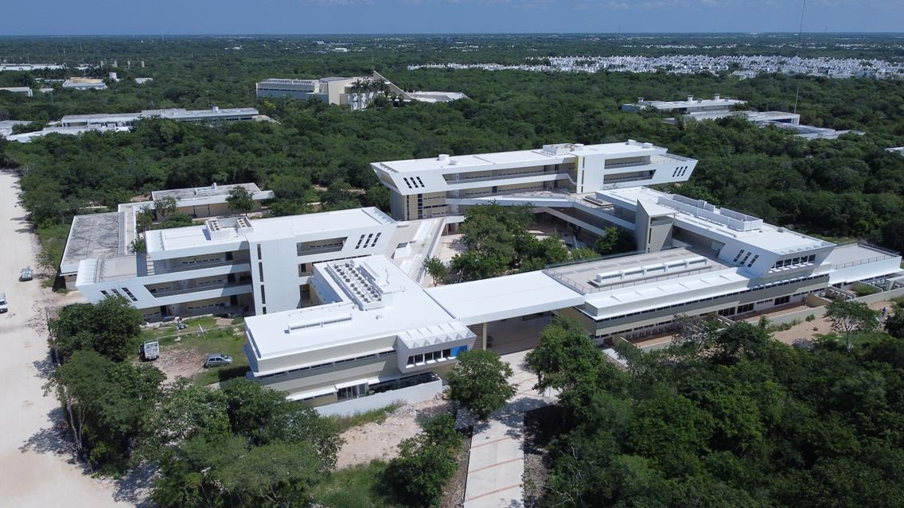
Categoría: Pública
Programas: Medicina, Derecho, Ingeniería
Una de las universidades públicas más importantes del sureste de México.
Se enfoca en investigación, desarrollo científico y formación profesional de alta calidad.
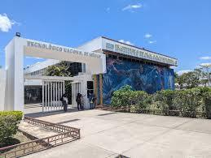
Categoría: Pública
Programas: Ingeniería Industrial, Sistemas
Forma parte del sistema nacional tecnológico y destaca por su preparación en áreas tecnológicas.
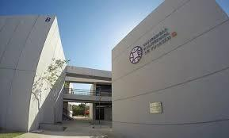
Categoría: Pública
Programas: Ciberseguridad, Ciencia de Datos
Universidad moderna enfocada en tecnologías avanzadas como inteligencia artificial y desarrollo de software.
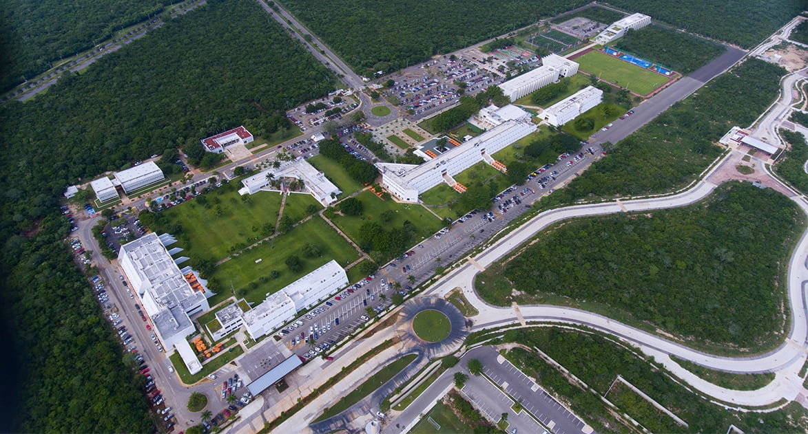
Categoría: Privada
Programas: Administración, Arquitectura
Institución privada reconocida por su formación en liderazgo y programas con enfoque internacional.
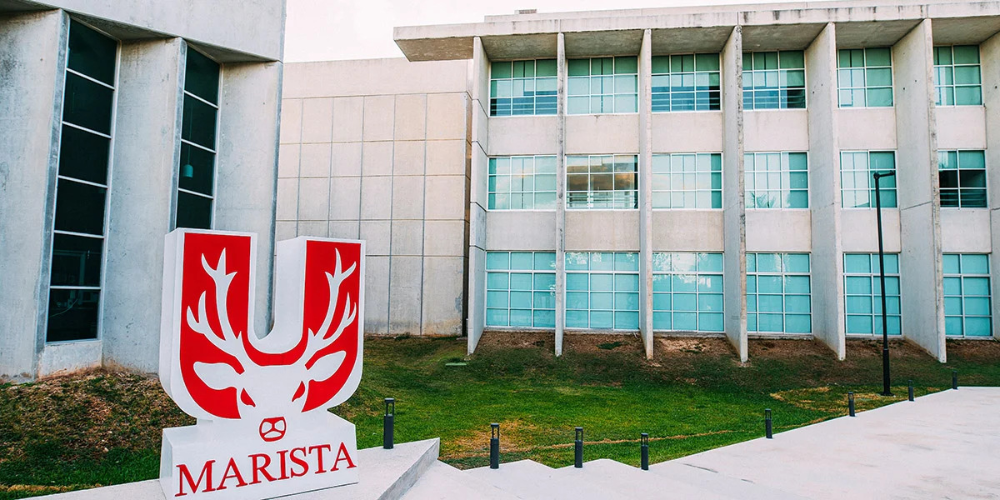
Categoría: Privada
Programas: Derecho, Psicología
Ofrece educación basada en valores humanos y desarrollo integral del estudiante.
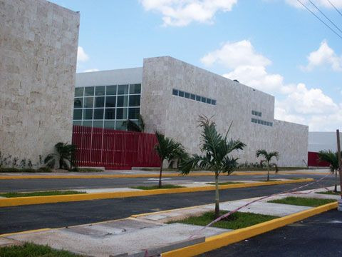
Categoría: Privada
Programas: Negocios, Ingeniería
Universidad con presencia nacional que busca preparar estudiantes para el mercado laboral global.
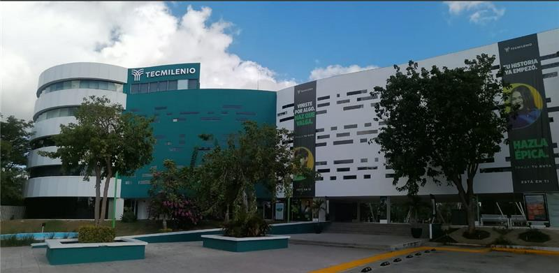
Categoría: Privada
Programas: Negocios, Tecnologías
Se enfoca en el desarrollo personal y profesional mediante un modelo educativo basado en el propósito de vida.
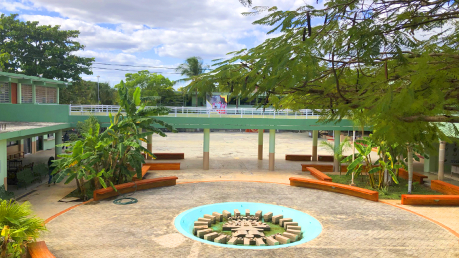
Categoría: Privada
Programas: Administración, Contaduría
Institución orientada a formar profesionales en áreas administrativas y empresariales.
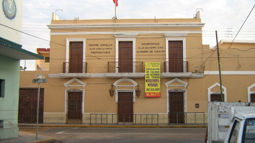
Categoría: Privada
Programas: Educación, Administración
Centro educativo con tradición en la formación académica y profesional.
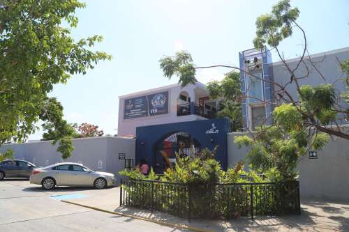
Categoría: Privada
Programas: Negocios, Turismo
Ofrece programas orientados a negocios internacionales y turismo.
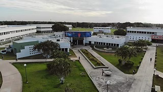
Categoría: Pública
Programas: Tecnologías de la Información
Institución tecnológica que ofrece carreras enfocadas al sector productivo y tecnológico.
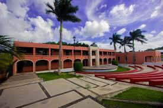
Categoría: Privada
Programas: Administración, Derecho
Universidad enfocada en ofrecer educación profesional accesible para estudiantes del oriente del estado.